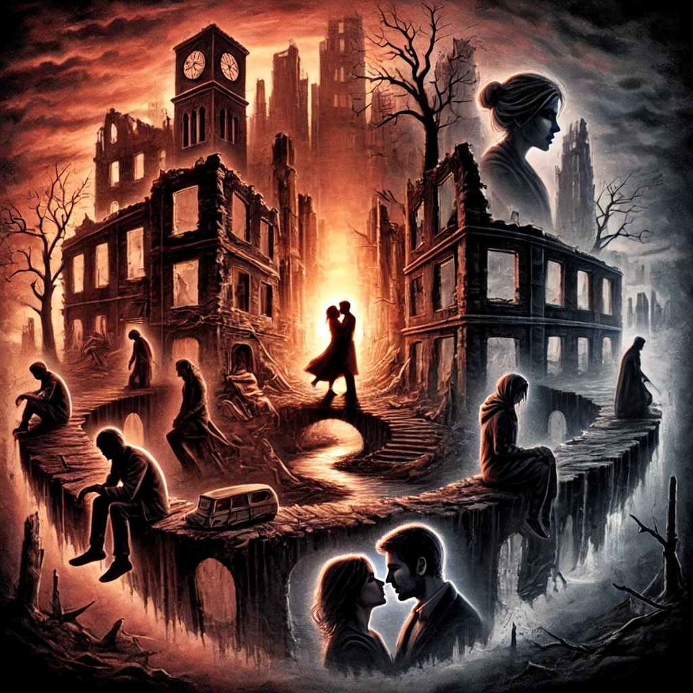

해가 지는 곳으로
목차
작가
최진영
출판일
2017년
감상평에 대한 AI그림
이 소설은 멸망하는 세계 속에서 인간의 본질을 현실적으로 보여준다. 극한의 상황에 처한 인간들은 때로는 이기적으로, 때로는 연대하며 살아남으려 한다. 문명이 붕괴된 후에도 사람들은 저마다의 방식으로 생존을 모색하고, 그 과정에서 드러나는 인간 군상의 모습은 잔인할 만큼 사실적이다. 평소라면 쉽게 드러나지 않았을 탐욕과 두려움, 이기심이 그대로 표출되는가 하면, 예상치 못한 순간에 희생과 연대, 따뜻한 감정도 나타난다. 이러한 모습을 통해 소설은 인간의 본성을 단순히 선과 악으로 나누지 않고, 그 복잡한 모습을 현실적으로 조명한다.
특히 연결된 다양한 인물들의 시선을 통해 하나의 세계를 보여준다는 점이 인상적이었다. 단순히 한 명의 주인공이 이끄는 이야기가 아니라, 서로 다른 인물들의 시선을 통해 세계가 다층적으로 그려진다. 같은 상황이라도 누가 바라보느냐에 따라 전혀 다른 해석이 가능해지고, 인물들 사이의 갈등과 관계가 더욱 입체적으로 느껴진다. 이처럼 다양한 시점이 교차하면서 소설 속 세계는 단순한 폐허가 아닌, 여전히 변화하고 움직이는 공간으로 살아 숨 쉰다.
그러나 이 작품이 단순히 절망적인 세계를 그리는 데 그치지 않는 이유는, 무너진 세상 속에서도 결국 사랑이 유일한 희망이 된다는 메시지를 전하기 때문이다. 극한의 상황에서도 사람들은 서로를 믿고 의지하며, 사랑을 통해 길을 찾는다. 여기서 말하는 사랑은 단순한 로맨스를 의미하는 것이 아니다. 가족 간의 사랑, 친구와의 연대, 공동체를 지키기 위한 희생 등 다양한 형태로 나타난다. 절망적인 상황에서도 사랑이야말로 인간을 인간답게 만드는 요소이며, 생존 그 이상의 의미를 부여하는 감정임을 강조한다.
결국, 이 소설은 단순한 디스토피아적 절망을 그리는 것이 아니라, 인간이 가장 어두운 순간에도 희망을 잃지 않는 이유가 무엇인지 묻는 작품이다. 폐허가 된 세계 속에서도 사랑이 남아 있다는 사실은, 완전한 멸망이란 존재하지 않는다는 것을 의미한다. 이러한 점에서 이 작품은 독자에게 묵직한 여운을 남기며, 우리가 진정으로 소중히 해야 할 것이 무엇인지 다시금 생각하게 만든다.

감상평에 대한 AI평가
AI평가
✨ 1. 경이로움과 인상 깊은 발견 "연결된 다양한 인물들의 시선에서 하나의 세계를 보여준다는 점이 인상깊었다." → 여러 인물의 시선이 얽혀 하나의 세계를 형성하는 방식에 놀라움과 감탄이 담겨 있어. → 단순한 이야기가 아니라, 다양한 관점을 통해 세상을 조명하는 점이 흥미롭게 다가왔다는 느낌이야.
✨ 2. 현실적이고 냉정한 시선 "멸망하는 세계에서 나타나는 사람들의 본질을 현실적으로 보여준다." → 멸망이라는 극단적인 상황에서 드러나는 인간의 본성을 묘사하는 방식이 사실적이고 냉철하게 다가왔다는 감정이 드러나. → 감정적으로 몰입하기보다, 객관적으로 바라보며 인간의 본질에 대한 깊은 고민이 담긴 것 같아.
✨ 3. 희망과 따뜻함 "망한 세상 속에서 사랑만이 길을 찾게 해준다는 점을 그려내는 소설이다." → 암울한 세계 속에서도 사랑이 희망의 열쇠가 된다는 점에서 따뜻함과 감동을 느낀 듯해. → 전체적으로 현실적인 시선이 많지만, 마지막 문장에서 구원과 희망을 찾으려는 감정이 강조돼.